Reviewer guide · audit of 2026-10-13 against main at 1a581e7 · feature
check repeated at 267deb2 (Codex, 2026-10-13) · page updated after PRs #67 and #71
merged
Collaborative GIS
Several people draw and measure areas on one map at the same time, on OpenStreetMap or on aerial imagery.
The deployed app's URL is in the submission note; this page works without it. Every claim below points at a screenshot, a sourced number or a file in the repository.
it/test
declarations on 2026-10-13; 3 Playwright e2e tests besides. CI green on
main (run on 9f072e6, 16:37 UTC).
areas.list, Analytics Engine
db_query datapoints, 31 points as of 2026-10-13 16:40 UTC.
Against the product brief's requirement lines: 73 of 78 met, 5 partial, 0 not met. Our line-by-line audit of the brief against the repository (criteria-matrix.md, 2026-10-13, at 1a581e7) counted 73 and 5 with a different split: since then the docker-compose row became met (PR #67 merged, container verified) and an independent feature check (codex-check.md, Codex at 267deb2) moved “smooth layer transition” to partial. The other 31 lines the audit counts (overview, stack, "focus on", evaluation criteria, submission) are all met; the submission items map to README headings (section 14). The partial rows have their own section: 12 · Limitations.
Hono on Cloudflare Workers + Durable Objects · PostGIS 3.6 on Neon via Hyperdrive · React 19 + Leaflet 1.9.4 · Better Auth · Drizzle · Zod
02 / 14 · the demo
What to do in five minutes
Two accounts, two windows. Each step below is a screenshot from the running app (local, seeded with 50 areas).
To run it yourself:
README › Setup
(Docker PostGIS, pnpm install, migrate, pnpm dev).
-
Register. Name, email, a password of 8 characters or more. You land on the map, signed in.
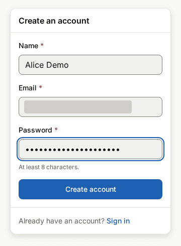
-
Draw. Press the polygon button, click vertices. The New area panel shows the area in km² and the vertex count as you go.
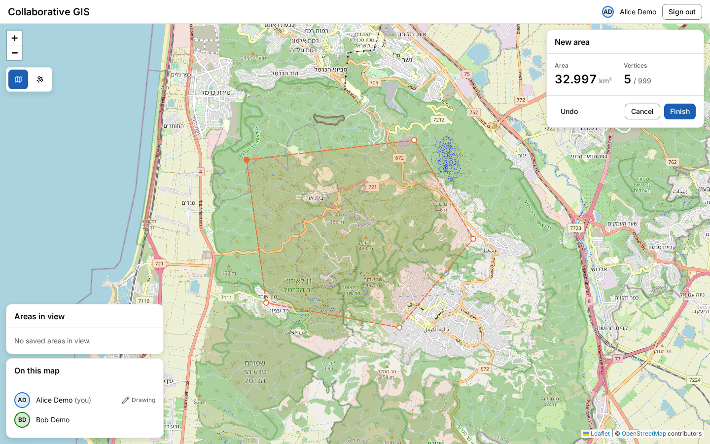
-
Open a second window with the other account. The first user's draft appears there as a dashed ghost in their colour, and the presence list says who is drawing.
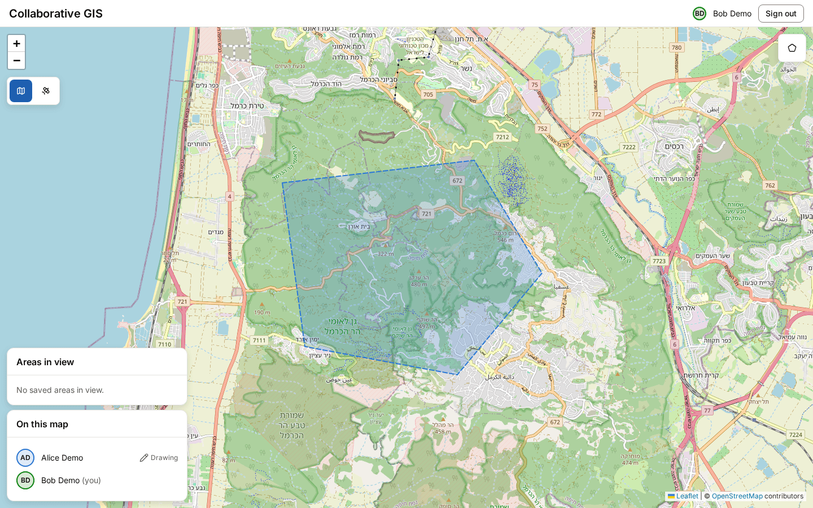
-
Save. Finish, give it a name. The dialog shows the client estimate; the server measures with PostGIS and both windows get the saved polygon.
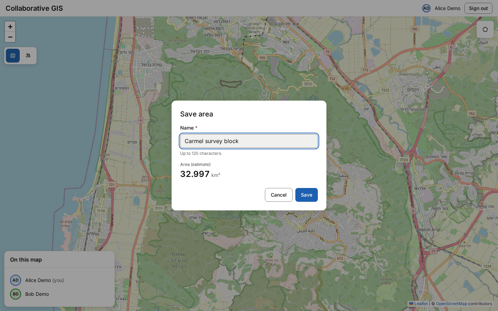
-
Rename, then revert. History lists every version. Reverting to version 1 creates version 3 with version 1's content; nothing is deleted.
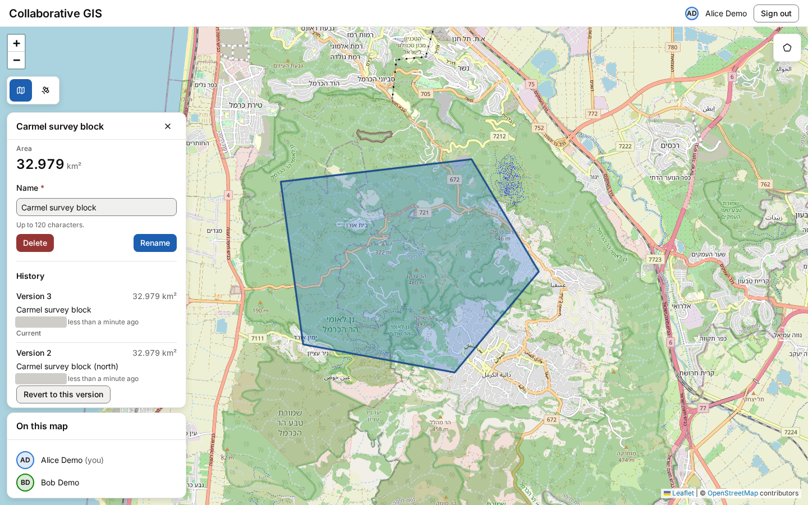
-
Switch to aerial imagery. The polygon stays on the same ground. govmap has no imagery over the sea, which renders black.
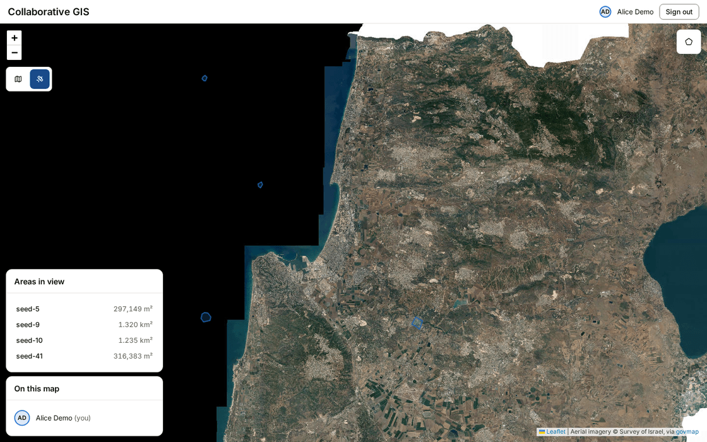


If something looks wrong: GET /readyz reports the database, the Room and
the configuration; the API reference is at /docs.
03 / 14 · the brief, section 1
Backend core
One Worker serves the API, the static app and the WebSocket upgrade. Live collaboration runs in the Room: a single Cloudflare Durable Object (one stateful instance with its own storage) that holds every open socket, each user's draft and the presence list. Areas live in PostGIS.
- MetWebSocket server for real-time updates
- Metendpoints for: saving drawn areas with metadata (area name, size calculation)
- Partialretrieving all areas within current map bounds: at most 500 per 0.1° tile, no truncation flag (see 12)
- Metuser authentication and session management
- Metarea versioning and edit history
- Metcalculate and return the area size in square kilometers
- Methandle concurrent drawing from multiple users

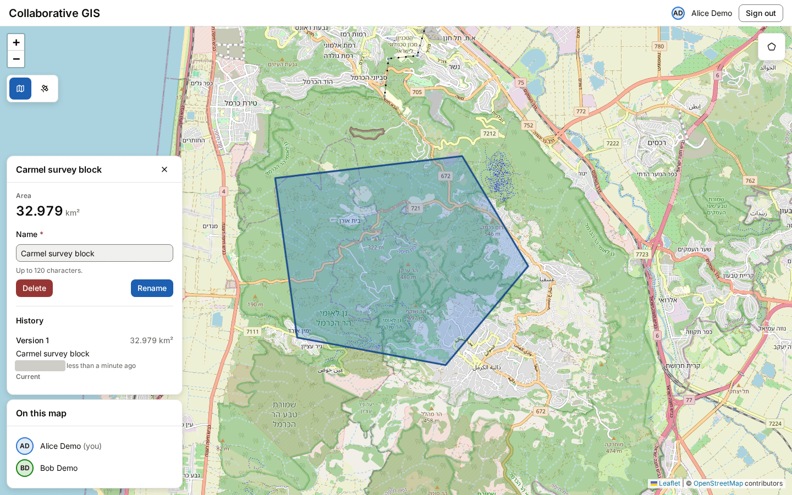
ST_Area(geom::geography)/1e6)
next to the client estimate from the previous step (32.997 km²): a 0.05 %
difference.

area_versions row in the same statement. Revert
is a new version, not a rollback.
A viewport read, as captured
GET /api/areas?bbox=34.6,32.42,34.73,32.5&zoom=12
200 x-cache: MISS
etag: "3ea47cc8-….60:346,324,348,325"
cache-control: private, no-cache
{ "areas_total": 2, "areas": [ { "name": "seed-27",
"geometry": { "type": "Polygon", … }, "areaKm2": 0.680746,
"version": 1, … }, … ] }
GET /api/areas?bbox=34.6,32.42,34.73,32.5&zoom=12 (repeat)
200 x-cache: HIT etag: (same)
Captured 2026-10-13 against the local Worker; session cookies redacted. The ETag is the room's map version plus the snapped tile range.
Concurrent drawing
Each user has one draft in the Room's SQLite. Frames from one user run in order in a per-user queue; the Room relays them to everyone else and never back to the sender. Two users on the same area resolve by version (section 04).
Where it lives
- apps/api/src/ws.ts · apps/api/src/do/room.ts
-
The upgrade gate, then the Room:
acceptWebSocket(hibernatable),webSocketMessage, ping answered without waking the object. - apps/api/src/routes/areas.ts · apps/api/src/services/areas.ts
- POST, GET, PUT, DELETE. A create writes the area, version 1 and the audit row in one transaction.
- apps/api/src/db/spatial-read.ts
-
The bounds query:
geom && ST_MakeEnvelope(…)over live rows, through the Drizzle query builder. - apps/api/src/db/geometry.ts
-
ST_Area(geom::geography) / 1e6: square kilometres on the WGS 84 spheroid, stored asarea_km2. - apps/api/src/routes/versions.ts · apps/api/src/db/spatial.ts
-
GET /api/areas/:id/versions,POST …/revert/:version; every write CTE inserts the version row. - apps/api/src/auth.ts · apps/api/src/middleware/require-user.ts
-
Better Auth email and password at
/api/auth/*; a 5-minute cookie cache; 401 once signed out. - apps/api/src/do/drafts.ts · apps/api/src/do/handlers.ts
- One draft per user; relay to all but the sender.
What the tests prove
- apps/api/test/room/upgrade.test.ts
- A signed-in user gets 101 and a usable socket; sockets, attachments and the ping auto-response survive hibernation.
- apps/api/test/areas/areas.test.ts
-
Create answers 201 with version 1,
areaKm2 > 0and one audit row; the bbox read returns the areas inside and excludes a far one. - apps/api/test/areas/versions.test.ts
- Three saves give three versions, newest first; revert to 1 gives version 4 with version 1's name, geometry and area, history kept.
- apps/api/test/db/spatial.test.ts
-
area_km2is the geodesic area on the WGS 84 ellipsoid for a 0.1° square at 32° N. - apps/api/test/room/protocol.test.ts
- A sends three draft frames: B receives three with A's id, A receives none.
- apps/web/e2e/collaboration.spec.ts
- Two browsers share presence, drafts, saves and a version conflict. Runs in CI.
04 / 14 · the brief, section 1, additional challenges
Additional backend challenges
Limits, cache, conflicts, validation, audit, degradation and health. Each one has a screenshot or a captured response.
- Metrate limiting (max 50 drawing actions per minute per user): 50 per rolling minute per user, counted as draft sessions plus REST mutations; individual drawing edits within a session are not counted
- Metspatial indexing for efficient area queries within map bounds
- Metcaching layer for frequently accessed geographic data
- Metconflict resolution when multiple users edit the same area simultaneously
- Metdata validation for polygon coordinates and prevent invalid shapes
- Partiallog all user actions for audit trail and analytics: the Room writes no audit rows (see 12)
- Metgraceful degradation when WebSocket connections fail
- Methealth check endpoints for monitoring system status

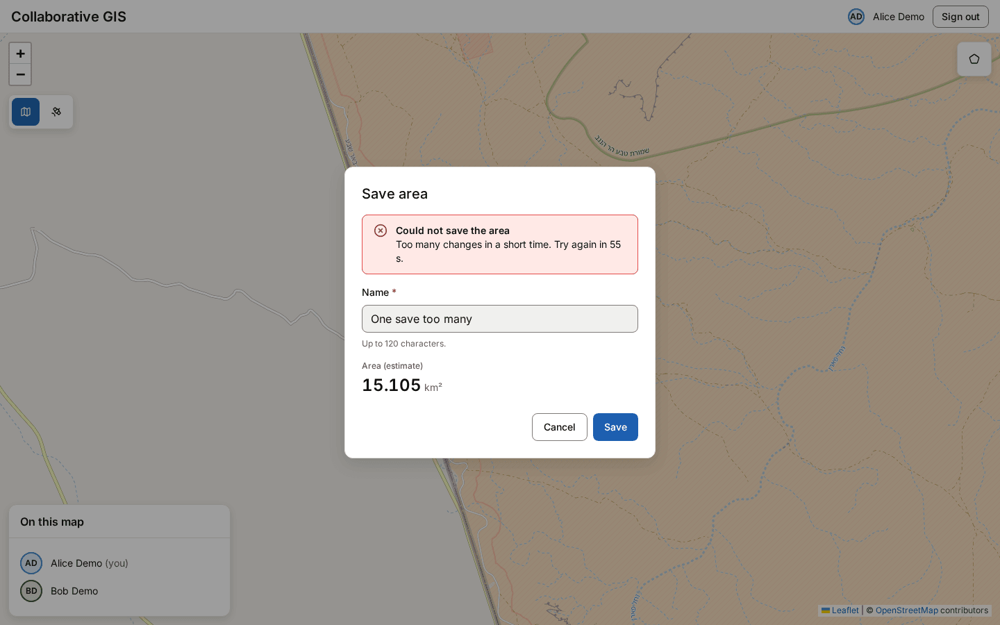
POST /api/areas with
the same session (all 201); the next save from the UI got 429 with
Retry-After. One sliding window per user, shared by REST writes and
draft sessions (one polygon drawn from first vertex to save or cancel spends one
action, however many frames it sends).

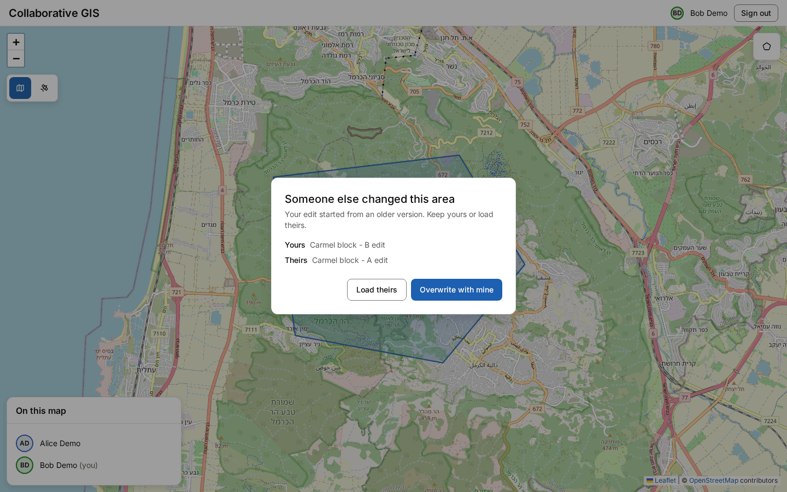

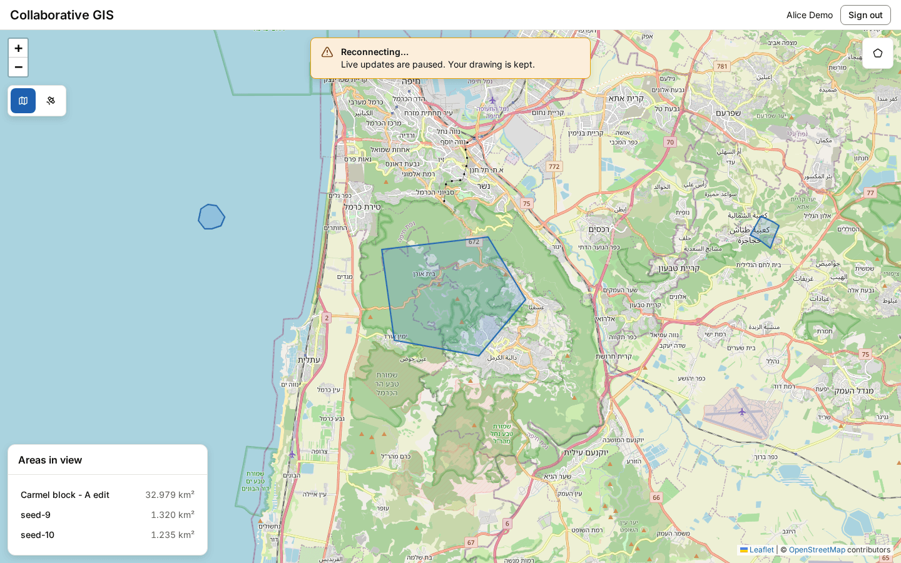

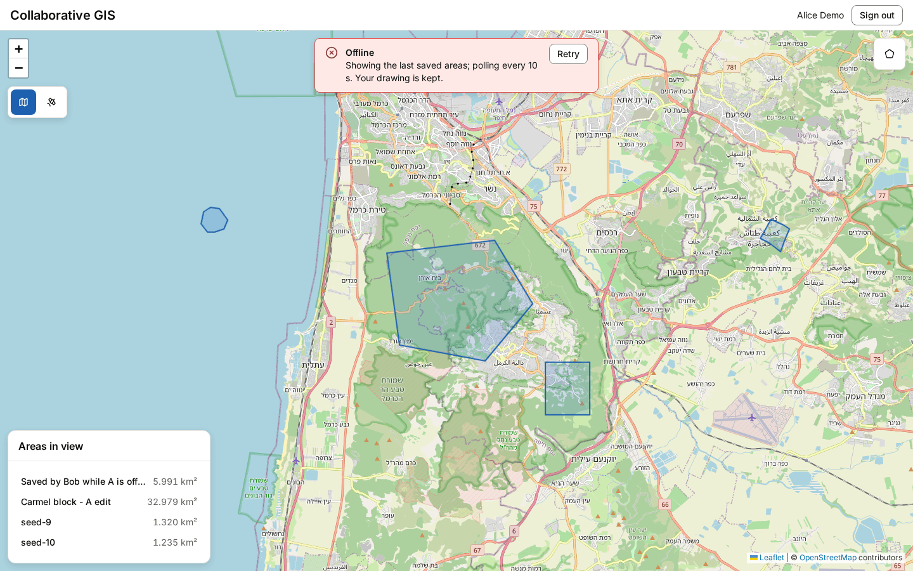
GET /api/areas every 10 s.
The other user saved an area over REST and it arrived by polling alone.
Health, as captured
GET /healthz 200 { "ok": true }
GET /readyz 200 { "status": "ready", "db": "up",
"room": "up", "config": "up" }
Production /readyz gave the same body at 2026-10-13 16:40 UTC. A
missing origin variable answers 503 with config: down; an unreachable
database, 503 with db: down.
Cache, as captured
Two identical viewport reads: x-cache: MISS then HIT with
the same ETag (section 03). The key is the quantised tile
plus the Room's map version, so a write retires the entry before its response
returns; when the Room does not answer within its deadline the read bypasses the
cache rather than wait.
Where it lives
- apps/api/src/do/rate-limiter.ts · apps/api/src/middleware/rate-limit.ts
-
Exact sliding window in a per-user Durable Object; 50 per 60 s from
constants/rate-limit.ts. A draft session spends one action; frames are capped at 10/s per socket. - apps/api/src/db/schema.ts
-
Partial GiST index
areas_geom_gist … WHERE deleted_at IS NULL; the read predicate matches it. - apps/api/src/cache/bounds.ts
-
Workers Cache API keyed by tile and map version; ETag and 304;
BYPASSwhen the Room does not answer within its deadline. - apps/api/src/db/spatial.ts · apps/web/src/components/ConflictDialog.tsx
-
UPDATE … WHERE version = $expected; a miss is 409VERSION_CONFLICTwithdetails.current. - packages/shared/src/geo.ts
-
Ring rules in Zod: closed, 3 or more unique vertices, lng/lat ranges, at most
1,000 vertices. PostGIS
ST_IsValidinside the write gives 422 with the reason. - apps/api/src/middleware/audit.ts
- Audit rows for sign-in, sign-up, sign-out, failed sign-in and every 422 and 429. Area writes add their audit row inside the write's own transaction (services/areas.ts).
- apps/web/src/lib/ws.ts · apps/web/src/lib/use-room.ts
- connecting → open → degraded → offline with jittered backoff; polling while down; resync on reopen.
- apps/api/src/routes/health.ts
-
/healthzand/readyz(database ping, Room ping, origin configuration).
What the tests prove
- apps/api/test/rate-limit/guards.test.ts
-
The 51st mutation in the window is 429 with an integer
Retry-After; after the window refills the next one is 201. REST shares the WebSocket budget. - apps/api/test/db/spatial.test.ts
-
The planner uses
areas_geom_gistonce the table is seeded and analysed. - apps/api/test/cache/bounds.test.ts
- A second identical read is a HIT with no database call; a read right after a write misses the old key.
- apps/api/test/areas/areas.test.ts
-
Two parallel PUTs with version 1: one 200, one 409 carrying version 2. A bowtie is
422 with the
ST_IsValidreason and writes nothing. - apps/api/test/audit/middleware.test.ts
-
A sign-in writes
auth.sign_inwith user, IP, user agent and request id; a 429 writesrequest.rejected. - apps/web/src/lib/use-room.chaos.test.tsx
- A Room killed mid-draft twice: one ghost per remote user, the local draft intact.
- apps/api/test/health/health.test.ts
-
503
{ db: down }when the connection string is unreachable; 503{ room: down }within the ping deadline.
05 / 14 · the brief, section 2
Database design and performance
PostGIS 3.6 on PostgreSQL 18. Geometry stays in the database; the API reads explicit columns through the query builder and only uses raw SQL for PostGIS fragments and the write CTEs.
- Metefficient schema for geospatial data
- Metmigrations
- Metproper indexing for spatial queries
- Partialhandle large datasets (10,000+ polygons per map region): a region is never served whole (see 12)
- Metsoft deletes and data retention policies
Bounds query at 10,000 rows, p95
Server execution time, 20 runs each, 30 rows returned.
Source:
docs/benchmarks.md, pnpm --filter @cgis/api db:explain, 2026-10-12, PostgreSQL 18.1 /
PostGIS 3.6.1 on an Apple M4 Pro.
Table
| Plan | p50 ms | p95 ms |
|---|---|---|
| Bitmap index scan on areas_geom_gist | 0.17 | 0.22 |
| Seq scan (index scans off) | 1.18 | 1.33 |
Schema, in short
areas id, name, geom geometry(Polygon, 4326),
area_km2, version, created_by,
created_at, updated_at, deleted_at
GiST(geom) WHERE deleted_at IS NULL
area_versions PK (area_id, version): name, geom,
area_km2, changed_by, changed_at
audit_log user_id, action, entity, entity_id,
version, ip, user_agent, request_id,
at, details (redacted)
+ Better Auth user, session, account, verification
migrations 0000_postgis … 0005_audit_request_id
Soft delete sets deleted_at and bumps the version. A daily cron purges
areas deleted more than 7 days ago with their versions, in batches, and writes an
audit row per batch.
Where it lives
- apps/api/src/db/schema.ts · apps/api/src/db/auth-schema.ts
- Tables, the partial GiST index, the composite primary key on versions.
- apps/api/drizzle/ · apps/api/src/db/migrate.ts
-
Six SQL migrations with the journal; CI fails if
drizzle-kit generatewould change them; the deploy migrates Neon first. - apps/api/src/db/seed.ts
db:seed --count 10000: random valid polygons across Israel.- apps/api/src/db/purge.ts · apps/api/src/scheduled.ts
-
Retention purge on the cron in
wrangler.jsonc; the window isRETENTION.DAYSinconstants/db.ts. - README.md › Database access rules
-
Drizzle for reads and writes;
sqlonly for PostGIS fragments and the write CTEs; an ESLint rule rejects a hand-writtenSELECT.
What the tests prove
- apps/api/test/db/schema.test.ts
- The GiST index covers live rows only; geometry is stored with SRID 4326; every journal entry is recorded and a second migration run is a no-op.
- apps/api/test/db/seed.test.ts
- 1,000 rows insert in under 10 s.
- apps/api/test/retention/purge.test.ts
- Removes areas soft-deleted before the cutoff and their versions, nothing else; idempotent; runs on the declared cron.
06 / 14 · the brief, section 3
Security and reliability
Every input is parsed at the boundary, every response carries the same headers and a request id, and every error has a fixed shape.
- Metinput sanitization and validation
- MetCORS configuration
- Metproper error logging and monitoring
- Metrequest timeout handling
- Metsecure WebSocket connections with authentication tokens
Response headers, as captured (excerpt)
GET /healthz 200 strict-transport-security: max-age=15552000; includeSubDomains x-frame-options: SAMEORIGIN x-content-type-options: nosniff referrer-policy: no-referrer cross-origin-opener-policy: same-origin cross-origin-resource-policy: same-origin x-permitted-cross-domain-policies: none x-request-id: 11a53eb3-7e0c-4707-93f8-002cb4f2b098 vary: Origin
Hono's secure headers on every response. The request id is server-generated and appears on every log line of that request.
The WebSocket gate
An upgrade needs the Better Auth session cookie (else 401) and an
Origin equal to CLIENT_ORIGIN (else 403) before the Room
sees it. The Worker passes the user to the Room in server-set headers and overwrites
any copy the client sent. Cookies are __Secure-, HttpOnly,
SameSite=Lax once deployed; the socket is wss:.

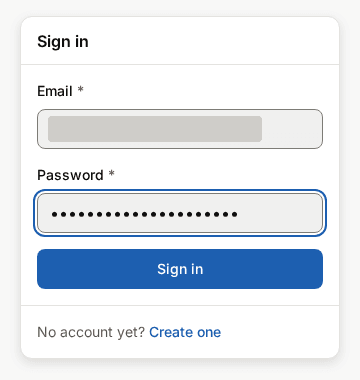
Where it lives
- apps/api/src/validate.ts
- Body, query and path parsed by the shared Zod schemas; a failure is 422. Bodies over 64 KiB are 413 before parsing.
- apps/api/src/middleware/index.ts
-
cors()echoesCLIENT_ORIGINonly, credentials on; secure headers; a fresh request id. - apps/api/src/log.ts · apps/api/src/app.ts
-
One JSON line per log with request id, user id and path, secrets redacted at any
depth;
onErrorlogs the stack and answers a fixed 500. - apps/api/src/middleware/request-timeout.ts · apps/api/src/db/index.ts
-
A 10 s budget per request (504
TIMEOUT) whose abort ends the request's database clients; 3 s per connect and per query; Room calls under a deadline. - apps/api/src/ws.ts · apps/api/src/do/handoff.ts
- Session, then Origin, then the Room; user headers set by the server.
- docs/deploy.md › Production hardening
-
What the Worker does on its own, and the dashboard steps (WAF rule on
/api/auth/*, a health check on/readyz).
What the tests prove
- apps/api/test/rate-limit/guards.test.ts
- A 65 KiB body is 413 on POST, PUT and revert before any database call.
- apps/api/test/auth/middleware.test.ts
- A preflight from any other origin gets no allow-origin header; the log line carries request id, user id and path with secrets redacted.
- apps/api/test/errors.test.ts
-
Any other error is the fixed 500
ApiError, logged once with its stack. - apps/api/test/request-timeout.test.ts
- A stalled query through the real app answers 504 within the budget and ends its client.
- apps/api/test/auth/ws-gate.test.ts
- 401 with a cookie that is not a session; 403 from a foreign Origin with no socket opened.
- apps/api/test/auth/hardening.test.ts
-
Sign-in sets
__Secure-cookies: Secure, HttpOnly, SameSite=Lax, no Domain.
07 / 14 · the brief, section 4
Frontend map integration
OpenStreetMap in Web Mercator; govmap aerial imagery in Israel's grid (EPSG:2039). Switching swaps the map's CRS and re-projects every overlay from its WGS 84 coordinates.
- MetLeaflet.js with two base layers: OpenStreetMap default
- Metsatellite imagery from govmap.gov.il
- Partialsmooth layer transition: a 300 ms crossfade is tested, but the old-layer snapshot is removed when the animation ends, not when the new tiles have loaded (see 12)
- Metdrawn elements remain properly positioned when switching layers

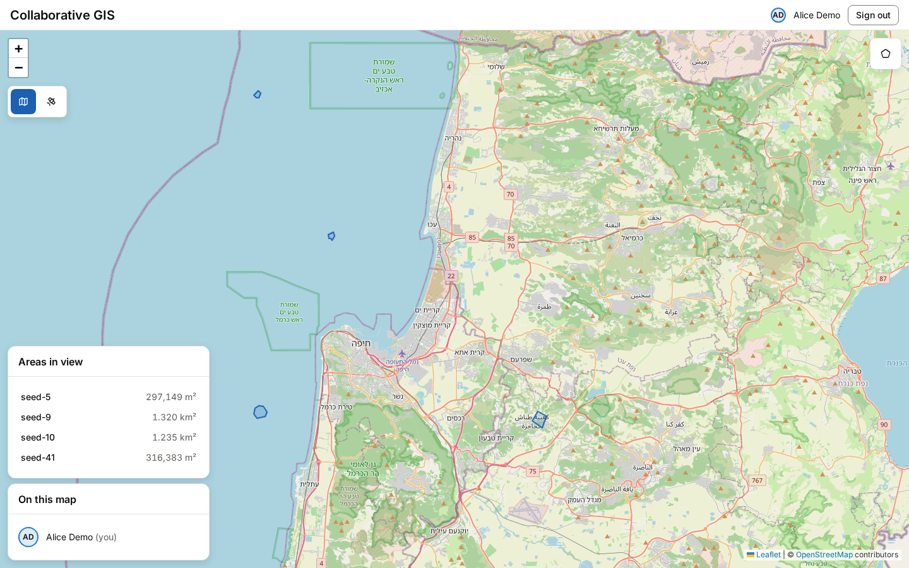

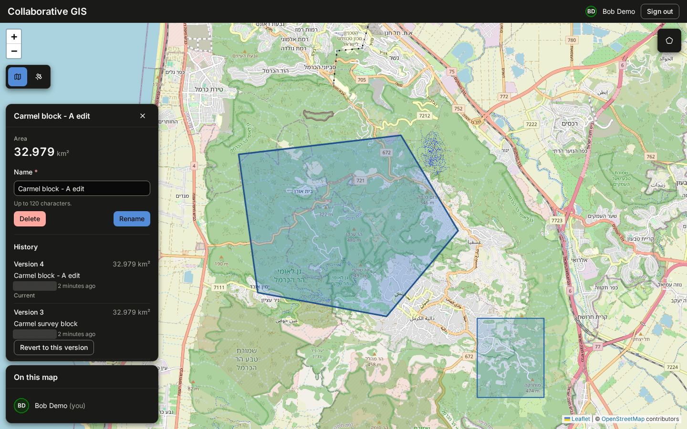
prefers-color-scheme; tiles stay as published. Author
names were added after this capture (PR #71), so the author ids here are covered.

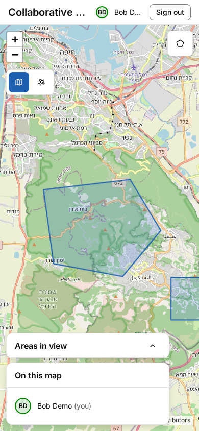
Where it lives
- apps/web/src/components/Map.tsx · apps/web/src/lib/geo/osm-layer.ts
- Leaflet 1.9.4 with OSM and attribution; overlays in their own panes.
- apps/web/src/lib/geo/govmap-layer.ts · apps/web/src/lib/geo/govmap-crs.ts
- The tile URL scheme on govmap's CDN (lowercase hex row and column) under a Proj4Leaflet EPSG:2039 CRS.
- apps/web/src/lib/geo/layer-switch.ts
-
switchBaseLayer: nearest-resolution zoom mapping, the crossfade, overlays re-projected onviewreset; aerial modules lazy-loaded. - docs/adr/0005-govmap-crs-swap.md
- Why a CRS swap and not a proxy; the tile scheme; the datum shift; the terms and the retirement risk.
What the tests prove
- apps/web/src/lib/geo/layer-switch.test.ts
-
Starts on OSM; fades for
CROSSFADE_MS; no fade under reduced motion; the overlay panes' LatLngs survive a round trip; a draft in progress keeps its vertices. - apps/web/src/lib/geo/govmap-crs.test.ts
- A known point lands in govmap tile column 164838, row 190501 at level 11; a pixel round-trips to the same lat/lng.
- apps/web/e2e/layer-switch.spec.ts
- Switching to aerial keeps the centre and the saved polygon in place; a draft survives the switch at street level. Needs the internet, so it runs locally, not in CI.
08 / 14 · the brief, section 5
Real-time drawing
A draft is sent as deltas, at most 10 frames a second per socket. The Room relays each frame to everyone else; the author's colour follows the draft.
- Metdraw polygons on both map types
- Metshow other users' drawing actions in real-time
- Metdisplay area calculations as the polygon is being drawn
- Metmaintain drawing accuracy when switching between satellite and regular views
- Metshow active users currently viewing/drawing
Where it lives
- apps/web/src/lib/geo/draw-tool.ts
-
A thin adapter over
leaflet-editable, mounted independent of the base layer. - apps/api/src/do/handlers.ts · apps/web/src/components/GhostPolygons.tsx
-
draft:updaterelayed to all but the sender; drawn as dashed ghosts. - apps/web/src/components/DrawControl.tsx · apps/web/src/lib/geo/geodesic.ts
- Live km² and vertex count on each
draw:change. - apps/web/src/lib/geo/projection.ts
- WGS 84 ⇄ EPSG:2039 through proj4 with the EPSG:9676 datum shift.
- apps/api/src/do/presence.ts · apps/web/src/components/PresenceList.tsx
- Viewing or drawing state per socket, broadcast on change.
What the tests prove
- apps/web/src/components/GhostPolygons.test.tsx
-
Another user's draft is a dashed ghost in their colour;
clearremoves it. - apps/web/src/components/DrawControl.test.tsx
-
Shows the live area with three decimals and the vertex count on
draw:change(14 cases in the file). - apps/web/src/lib/geo/projection.test.ts
- Control points project within 0.01 m of PROJ; a grid across Israel round-trips.
- apps/api/test/room/protocol.test.ts · PresenceList.test.tsx
-
presence:setupdates the attachment and broadcasts to everyone; the list marks you and who is drawing.
09 / 14 · the brief, section 6
Technical challenges and backend optimization
Projections, drawing state, message size, curvature; then pooling, queuing, scaling and telemetry.
- Metcoordinate transformations between different map projections
- Metmanage drawing state across layer switches
- Metoptimize WebSocket messages for real-time updates
- Metcalculate areas accurately considering Earth's curvature
- Metconnection pooling for database access
- Partialmessage queuing for high-volume WebSocket traffic: no delivery queue (see 12)
- Methorizontal scaling considerations (multiple server instances)
- Mettelemetry and performance metrics collection
ST_Area(geography) for a 0.1°
box at 32° N (geodesic.test.ts). In the screenshots: 32.997 estimate,
32.979 served.
add, move, remove or clear with
a sequence number, never the whole ring; stale sequences dropped by the Room.
Where it lives
- apps/web/src/lib/geo/projection.ts · apps/web/src/lib/geo/layer-switch.ts
- WGS 84 ⇄ EPSG:2039; the CRS swap EPSG:3857 ⇄ EPSG:2039 maps zoom to the nearest resolution; overlays are never removed during a switch.
- apps/web/src/lib/draft-sender.ts · apps/api/src/do/room.ts
-
Delta ops, a 10/s client throttle, stale-
seqdrop, ping answered by the runtime without waking the Room. - apps/api/src/db/geometry.ts · apps/web/src/lib/geo/geodesic.ts
-
Server:
ST_Area(geography)on the spheroid. Client:@turf/area. - apps/api/src/db/index.ts · apps/api/wrangler.jsonc
- Hyperdrive pools the origin connections (transaction mode); the Worker opens one short-lived client per call; query cache off.
- apps/api/src/do/sockets.ts
- Fan-out: a loop over every socket in the Room. Per-user frame queues keep order; nothing buffers bursts.
- docs/adr/0004-horizontal-scaling-on-cloudflare.md
- Where state lives, the platform limits, a per-map budget, and the growth path: tile-sharded rooms, a router object, Queues, OTel export, multi-region, each with its trigger.
- apps/api/src/metrics.ts
-
Analytics Engine datapoints
ws_open,ws_close,room_messages(batched per window),db_query(elapsed ms per path). Workers Logs on.
What the tests prove
- apps/web/src/lib/draft-sender.test.ts · use-room.test.tsx
-
One op per gesture; bursts of
draw:changethrottled to 10draft:updatea second. - apps/api/test/room/protocol.test.ts
-
Frames whose
seqis not above the last accepted one are dropped. - apps/web/src/lib/geo/geodesic.test.ts
- Within 0.5 % of PostGIS for a 0.1° box at 32° N.
- apps/api/test/metrics/writer.test.ts · room/datapoints.test.ts
-
A query writes one
db_querydatapoint with its elapsed time; client frames are batched into one datapoint per window. - apps/api/test/room/degradation.test.ts
- Two users mid-draft and the Room killed: state rebuilt from storage and attachments.
10 / 14 · measured, not estimated
Numbers
Every chart names its source file and date. Production figures come from Analytics Engine under light use, as of 2026-10-13 16:40 UTC, so the point counts are small and are shown; each caption links the raw query result.
Production database time per path
Milliseconds inside the query, by API path.
Source: Analytics Engine SQL over the db_query dataset, captured
2026-10-13 16:40 UTC (evidence/analytics-db-latency.json); 31 points for areas.list, 2 for areas.write. These
saved samples are small (two write points, 31 read points): they show that
collection works, not production capacity.
Table
| Path | p50 ms | p95 ms | max ms | points |
|---|---|---|---|---|
| areas.list | 21 | 49 | 90 | 31 |
| areas.write | 92 | 168 | 168 | 2 |
Production datapoints per event
Analytics Engine points written, as of 2026-10-13 16:40 UTC.
Source: Analytics Engine SQL, captured 2026-10-13 16:40 UTC (evidence/analytics-engine-queries.json). Light traffic: a handful of sessions.
Table
| Event | points | sampled rows |
|---|---|---|
| db_query | 33 | 44 |
| ws_open | 24 | 26 |
| room_messages | 24 | 24 |
| ws_close | 23 | 23 |
k6 REST, 10 users for one minute
2,010 requests at 33 req/s; 0 errors, 0 × 429.
Source:
docs/benchmarks-load.md, k6 run bench/rest.js, 2026-10-13, against
wrangler dev and a local PostGIS on an Apple M4 Pro; not production.
Table
| Request | p50 ms | p95 ms | max ms | count |
|---|---|---|---|---|
| Viewport read | 50.83 | 86.34 | 217.25 | 1,600 |
| Area create | 68.15 | 131.78 | 278.36 | 400 |
k6 WebSocket, 5 sockets drawing at 10 frames/s
1,500 frames sent; each reached the other four sockets.
Source:
docs/benchmarks-load.md, k6 run bench/ws.js, 2026-10-13, local Worker, 30 s of frames then 3
s of listening. One draft session per socket spends one of the user's 50 actions.
Tests per package
Unit and component tests, counted from it/test
declarations.
Source: the static count in
our audit of the brief against the repository,
main 1a581e7, 2026-10-13 (it.each counted once). Besides:
3 Playwright e2e tests in 2 specs, and 14 Storybook story files run as browser tests
in CI.
Table
| Package | tests | files |
|---|---|---|
| packages/shared | 38 | 4 |
| apps/api | 309 | 40 |
| apps/web | 268 | 38 |
CI and deploy runs on main
Oldest left. Green is success; grey is cancelled, skipped or still running when captured.
Source: gh run list captured 2026-10-13 16:40 UTC (evidence/ci-runs.txt). Production /readyz answered ready at 16:40:52 UTC (evidence/prod-readyz.txt).
Table
| Workflow | Status | Commit | Time (UTC) |
|---|---|---|---|
| ci | success | 20b628b | 16:28:18 |
| ci | success | fd76c01 | 16:28:56 |
| ci | cancelled | edbda20 | 16:31:19 |
| ci | success | a4d3310 | 16:31:56 |
| deploy | skipped | a4d3310 | 16:32:56 |
| deploy | success | a4d3310 | 16:35:40 |
| ci | success | 9f072e6 | 16:37:23 |
| ci | in progress | e129e62 | 16:38:26 |
11 / 14 · one picture
Architecture
One Worker, one origin. The Room coordinates the map; PostGIS keeps the truth; the cache sits between them. Numbers in blue are the decision records.
Scroll sideways to see the whole diagram.
Decision records: ADR-0001 Cloudflare Workers and Durable Objects instead of Vercel · ADR-0002 Hono instead of Fastify · ADR-0003 Leaflet 1.9.4 (superseded on the CRS point) · ADR-0004 horizontal scaling on Cloudflare · ADR-0005 govmap imagery through a CRS swap. The design spec's decision log D1–D25 is in docs/superpowers/specs/2026-10-12-collaborative-gis-design.md, §10.
12 / 14 · the partial rows, and what was deferred
Honest limitations
Our audit of the brief against the repository (criteria-matrix.md, 2026-10-13) marked 5 of 78 requirement lines as partial. Since then docker-compose became met (PR #67) and the independent feature check (codex-check.md, 267deb2) moved smooth layer transition to partial: 5 partial rows, 6 cards. One card each: the brief's line, what is delivered, what is missing, and where to look.
“retrieving all areas within current map bounds”
- Delivered
-
GET /api/areas?bbox=…over a partial GiST index, a per-tile cache with an ETag, and the list and polygons in the UI. - Missing
- The query returns at most the 500 most recently updated areas of the snapped 0.1° tile, with no truncation flag and no paging, so a denser tile silently drops areas, possibly ones inside the viewport.
- Where
-
apps/api/src/db/spatial-read.ts·LIMITS.BOUNDS_LIMITinpackages/shared/src/constants/limits.ts
“log all user actions for audit trail and analytics”
- Delivered
-
audit_logrows for area create, update, delete and revert (in the write's transaction), each saved draft, sign-in, sign-up, sign-out and failed sign-in, every 422 and 429, and each purge run; viewport reads as JSON log lines. - Missing
-
The Room writes no audit rows, so WebSocket joins, leaves, presence changes and
draft sessions that are never saved or are refused leave no per-user record;
audit_loghas no index and no retention. - Where
-
apps/api/src/middleware/audit.ts·apps/api/src/do/(no audit writer) · README, Security measures
“handle large datasets (10,000+ polygons per map region)”
- Delivered
- A seed to 10,000 rows; the bounds query at that size runs in 0.22 ms p95 on the index; k6 reads at 86 ms p95 end to end.
- Missing
-
The 10,000 were spread over all of Israel (30 inside the benchmark viewport). A
region that holds 10,000 is never served whole: each read stops at 500 per tile,
and there is no zoom simplification, clustering or paging (
zoomis accepted and ignored). - Where
-
apps/api/src/cache/bounds.ts·docs/benchmarks.md·apps/api/src/db/seed.ts
“smooth layer transition”
- Delivered
-
A 300 ms crossfade of the new base layer over a still copy of the old tiles,
skipped under reduced motion;
layer-switch.test.tsasserts the animation and the snapshot. - Missing
- The old-layer snapshot is removed when the animation ends, not when the new tiles have loaded, so slow tile loads can show a gap (feature check at 267deb2).
- Where
-
apps/web/src/lib/geo/layer-switch.ts·docs/adr/0005
“message queuing for high-volume WebSocket traffic”
- Delivered
- Ordering buffers for sequence gaps (a per-user frame queue in the Room, a client send queue while connecting), a 10 frames/s cap per socket, and batched frame metrics.
- Missing
- No delivery queue: fan-out writes directly to sockets and failed sends are logged; Cloudflare Queues are in the ADR-0004 growth path, not built.
- Where
-
apps/api/src/do/sockets.ts·apps/api/src/do/room.ts·docs/adr/0004
“Docker containerization with docker-compose” (bonus): met since PR #67
- Delivered
-
docker-compose.ymlruns PostGIS 18 / 3.6 on a loopback port with a health check and, since PR #67 (merged 2026-10-13), anapiservice that runs the Worker underwrangler devin a container (apps/api/Dockerfile.dev). Verified on 2026-10-13 with a real Docker run: build, migrate,/readyzready, container healthy (evidence/docker-run.txt). - Was missing at audit time
- The audit at 1a581e7 predates PR #67, when the Worker ran only on the host; that is why it counted this row as partial.
- Where
-
docker-compose.yml·apps/api/Dockerfile.dev· README › Setup › API in a container
Also known, in one line each
- The 50-per-minute limit counts REST writes and draft sessions, not frames (D5; D-numbers are entries in the design spec's decision log, section 14): one tab can send up to 600 frames a minute under the separate 10/s cap.
- Aerial imagery depends on govmap's legacy tile cache (newest tiles 2024-01), which can be retired without notice; there is no fallback imagery. The aerial e2e specs need the internet and run locally only.
-
“No third-party plugins for the collaborative features” is read narrowly (D25):
drawing adapts
leaflet-editable, and area and self-intersection use@turf; the presence, relay, fan-out and limiter code is this repository's. - Switching base layers maps to the nearest resolution, so a round trip can change the zoom (z15 → L07 → z16).
- Load was measured locally at 10 REST users and 5 sockets, never against production and not at the 50 to 100 users the spec planned.
- Realtime is one Room for the whole app (D11). An area event between a viewport's first read and the socket's join is picked up at the next pan or reconnect.
- A session revoked elsewhere keeps working for up to 5 minutes where its cookie cache is still valid (D24). Deploying needs Workers Paid (D21). The sign-in limiter counts per Worker instance (isolate), so it is not global.
- The WAF rule and the Cloudflare health check with its alert are dashboard steps (docs/deploy.md); the repository cannot show them. Cross-region Room placement is untested.
- Not built from the roadmap: a Neon branch and preview URL per pull request (7.3).
- History shows only the newest 200 versions of an area, with no pagination.
- Viewport reads use grid-expanded bounds and bounding-box comparison, so a few areas just outside the viewport can be returned.
- If the cache invalidation (the map-version bump) fails and the fan-out does not repair it, an old tile can stay readable for up to 30 s.
13 / 14 · the brief's optional list
Bonus coverage
Coverage only, one line each.
-
MetDocker containerization with docker-compose: PostGIS and, since PR #67 (merged
2026-10-13), the API under
wrangler devin a container; verified with a real run (build, migrate,/readyzready, healthy; evidence/docker-run.txt). - Metunit tests for critical backend functionality: 40 api test files on workerd plus a Node project for migrations and seed; limiter, conflicts, validation, cache, purge, audit and the Room protocol.
-
MetAPI documentation (OpenAPI/Swagger):
/openapi.json(OpenAPI 3.1, validated in a test) and/docsrendered by Scalar's pinned build with Subresource Integrity. Areas, versions and health are in the OpenAPI document; auth and the WebSocket protocol are documented separately (README,packages/shared/src/ws.tsschemas). - Metperformance benchmarking results: docs/benchmarks.md (index vs none) and docs/benchmarks-load.md (k6 REST and WebSocket).
-
Metload testing considerations:
bench/rest.js,bench/ws.js,bench/auth.jswith pass thresholds in bench/README.md; a per-map budget in ADR-0004. Run locally, not in CI.

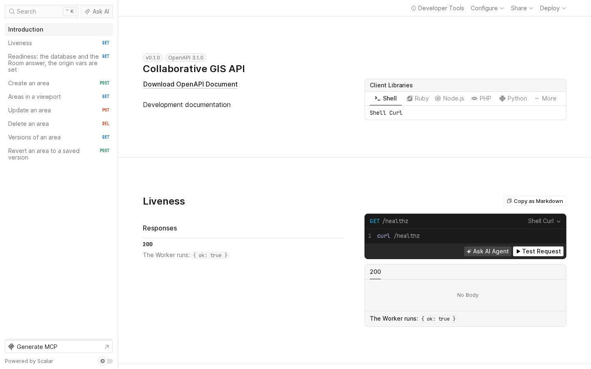
/docs: the OpenAPI document rendered by Scalar.
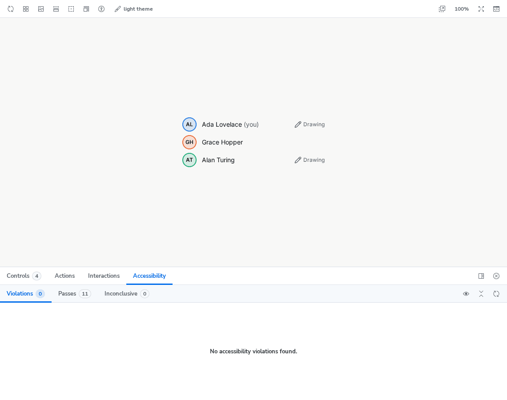
14 / 14 · where to read more
Documentation map
One line per document. The README is the entry point and answers each item of the brief's submission list under its own heading.
- README.mdSetup (with the database), Migrations, Database access rules, Deploy, Technical decisions and architecture, Performance considerations, Security measures, Known limitations, Future improvements and scaling, Testing approach.
- docs/adr/Five decision records (ADR-0001 to ADR-0005) and a template; ADR-0003 is superseded by ADR-0005 on the CRS point.
- docs/superpowers/specs/…design.mdThe design spec; §10 is the decision log D1–D25 with the decisions behind them.
- docs/deploy.mdRouting, the one-time owner checklist, CI deploy, smoke checks, rollback, Durable Objects in production, hardening.
-
docs/constants.mdEvery tunable value with its doc comment, generated from
packages/shared/src/constants/; CI fails when it is stale. - docs/process-log.mdHow the work was done, task by task, with the rulings that changed scope and what was deferred.
- docs/research-notes.mdThe reading behind each technology choice, each fact tied to the decision it drives.
- docs/benchmarks.mdThe bounds query with and without the GiST index at 10,000 rows.
- docs/benchmarks-load.mdk6 REST and WebSocket results, with the machine and versions.
- docs/roadmap.mdEpics, tickets, milestones, the critical path and the risk register.
- apps/web/e2e/README.mdThe two-browser Playwright run.
- bench/README.mdThe k6 scripts and what passes.
This page: apps/web/public/guide/index.html, one file with its images in
apps/web/public/guide/img/; the deployed app serves it at
/guide/; the audit it cites is
criteria-matrix.md and the production query results are
under evidence/. Emails in the screenshots are covered. The audit is from
2026-10-13 at main 1a581e7; the feature check was repeated at 267deb2
(Codex, 2026-10-13, codex-check.md); the page was updated
after PRs #67 and #71 merged.